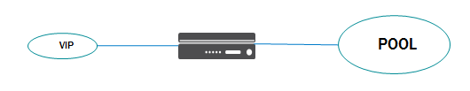

Neutron/LBaaS/F5BigIP - Multi-Tenant Plugin Version 1.0-1 Release
- Supported Neutron Releases
- Scheduling LBaaS Deployments
- Installation of the Plugin Side Type Driver
- Neutron Server Plugin Settings
- Installing and Running a LBaaS Agent Processes
- iControl Driver Supported TMOS Versions
- Supported Neutron Network Topologies
- OpenStack and TMOS Multitenancy
- Supported TMOS High Availability Modes
- Preparing Your TMOS Device for LBaaS
- Troubleshooting Issues
Supported Neutron Releases
The f5 LBaaS plugin driver, as well as the f5 LBaaS agent with iControl driver, support the OpenStack Neutron Havana release. There are no alternations made to the community LBaaS database schema, nor any additional database tables generated. The stock community LoadBalancerPlugin class is used as the service plugin. Any discovered issues with the community LoadBalancerPlugin class and the associated LBaaS database model will need to be monitored and resolved through the OpenStack Neutron community.
For deployment modes which include tenant tunnels, Neutron MUST be using the ML2 core plugin, with the associated Neutron ML2 types and data model classes. I.E.:
core_plugin = neutron.plugins.ml2.plugin.Ml2Plugin
Using the standard community ML2 plugin and type drivers will meet the f5 LBaaS plugin requirements.
When Neutron networks are discovered by the plugin that fall into the classification of a Pool, Vip, or Member object, they must include the Neutron providernet extension data. The providernet extension adds attributes to Neutron networks allowing other services, such as the LBaaS service, to discern appropriate L2 network settings, allowing Neutron to connect appropriately. The f5 LBaaS plugin uses these attributes to provision L2 connectivity on TMOS devices matching the L2 connectivity for the appropriate Neutron networks. If the providernet extension data is not present on Neutron networks, proper L2 isolation and tenancy can not be provisioned on the TMOS devices.
You can determine if your Neutron networks support this extension by showing the details for a Neutron network and checking for the following attributes, such as:
# neutron net-show Provider-VLAN-62 +---------------------------+--------------------------------------+ | Field | Value | +---------------------------+--------------------------------------+ | admin_state_up | True | | id | 07f92400-4bb6-4ebc-9b5e-eb8ffcd5b34c | | name | Provider-VLAN-62 | | provider:network_type | vlan | | provider:physical_network | ph-eth3 | | provider:segmentation_id | 62 | | router:external | False | | shared | True | | status | ACTIVE | | subnets | a89aa39e-3a8e-4f2f-9b57-45aa052b87bf | | tenant_id | 3aef8f59a43943359932300f634513b3 | +---------------------------+--------------------------------------+
Typically only older style, monolithic Neutron core drivers will be a concern. ML2 core drivers should typically support providernet extensions without any additional configuration.
Scheduling LBaaS Deployments
The f5 LBaaS plugin driver schedules LBaaS requests across one or multiple f5 LBaaS agent processes. OpenStack RPC queues are used to spread requests out to one or multiple f5 LBaaS agent processes. The f5 agents register and use RPC queues to call back into the f5 LBaaS plugin driver to update LBaaS object status and allocate Neutron ports and IP addresses as necessary.
F5 LBaaS agents can be run on any host which has the appropriate Neutron python libraries installed. This includes the controller or network nodes. Alternatively, a host can be dedicated to service agents. Multiple f5 LBaaS agent processes can run on the same host simultaneously.
F5 LBaaS agent processes are mapped directly to TMOS Device Service Groups. As a result there will always be one active f5 LBaaS agent per TMOS Device Service Group.
By default the f5 LBaaS plugin uses an agent scheduler which will keep all LBaaS Pools associated with the same tenant on the same TMOS Device Service Group. This aids in scaling by keeping all network objects associated with an OpenStack tenant on the same TMOS Device Service Group instead of requiring them to be provisioned on all possible TMOS Device Service Groups in your cloud deployment.
Other scheduling from pool to agent is possible with the use of a custom scheduler class. Please reference the plugin configuration setting for f5_loadbalancer_pool_scheduler_driver in the neutron.conf configuration file in following section. Only the tenant affinity scheduler, described above, is included with the f5 LBaaS plugin.
F5 LBaaS agent processes use standard Neutron agent registration and state reporting. The health and details of registered f5 LBaaS agents can be queried using typical Neutron agent commands.
# neutron agent-list
+--------------------------------------+--------------------+------------------------------------------------------+-------+----------------+
| id | agent_type | host | alive | admin_state_up |
+--------------------------------------+--------------------+------------------------------------------------------+-------+----------------+
| 034bddd0-0ac3-457a-9e2c-ed456dc2ad53 | Open vSwitch agent | sea-osp-cmp-001 | :-) | True |
| 17e447de-6589-4419-ac83-36ffb7e8b328 | Open vSwitch agent | sea-osp-cmp-002 | :-) | True |
| 301f6e21-a8f2-4f58-a4a3-38eabc0c2987 | Open vSwitch agent | sea-osp-net-001 | :-) | True |
| 5ecd96ab-d01e-4a64-92e8-9cd7caa8f25e | L3 agent | sea-osp-net-001 | :-) | True |
| b50b8b21-0d0b-4776-a6ec-eeab61590f10 | DHCP agent | sea-osp-net-001 | :-) | True |
| fb7bff08-3e45-475a-a02a-8020a2e0763a | Loadbalancer agent | sea-osp-ctl-001:b1cbd354-c78f-572d-8492-f6be4f7ef0bd | :-) | True |
+--------------------------------------+--------------------+------------------------------------------------------+-------+----------------+
F5 LBaaS agent processes support the configuration of static name value parameters which will get passed to the plugin every time it updates its status. These custom values can be used to inventory the f5 LBaaS agents or as input to custom agent schedulers. Please see the reference to the static_agent_configuration_data entry in the agent f5-bigip-lbaas-agent.ini configuration in the following section.
High availability for the f5 LBaaS agent process follows the same pattern as any OpenStack agent. Please see the OpenStack high availability guides for instructions on how to run active and standby agents in a high availability mode.
OpenStack Active-Stanby Agent Guide
Please see the section below for the high availability modes supported for the TMOS devices themselves.
Installation of the Plugin Side Type Driver
The Neutron server plugin driver is distributed as a Debian installation package. It has been tested on Ubuntu Server 12.04 LTS. To install the Neutron server plugin driver, download the f5-lbaas-driver_1.0-1_all.deb package to the host which runs your Neutron API server process. To install run:
sudo dpkg -i f5-lbaas-driver_1.0-1_all.deb
Neutron Server Plugin Settings
There are two settings which must be set to enable Neutron LBaaS with the F5 LBaaS type driver. The services entry for Neutron must include a reference to the default community LoadBalancerPlugin. The services configuration entry in the default neutron.conf file contains a comma separated list of python classes which implement extension plugin services. The following example would load the default community LoadBalancerPlugin.
In the neutron.conf file:
service_plugins = neutron.services.loadbalancer.plugin.LoadBalancerPlugin
Once the default community LoadBalancerPlugin plugin is loaded, service provider type drivers entries will be examined. Providing the following service provider type driver entry for the LOADBALANCER plugin service will load the f5 LBaaS type driver:
service_provider=LOADBALANCER:F5:neutron.services.loadbalancer.drivers.f5.plugin_driver.F5PluginDriver:default
You must have at least one default entry for each plugin service. If the F5 plugin type driver is not the default, simply remove the default field from the above entry.
In the default section of your neutron.conf file, the optional f5_loadbalancer_pool_scheduler_driver variable can be set to the full python class path for an alternative agent scheduler. The default value for this setting, neutron.services.loadbalancer.drivers.f5.agent_scheduler.TenantScheduler, will cause the plugin to assign pools to agents with tenant affinity as described above.
Installing and Running an LBaaS Agent Processes
The f5 LBaaS agent is distributed as a Debian installation package. It has been tested on Ubuntu Server 12.04 LTS. To install a single LBaaS agent, first download the f5-bigip-lbaas-agent_1.0-1_all.deb package to the host which will run your agent process. Once downloaded, run:
sudo dpkg -i f5-bigip-lbaas-agent_1.0-1_all.debOn Ubuntu systems an upstart job will run as a result of the installation. You should stop this service and configure your f5 LBaaS agent:
sudo service f5-bigip-lbaas-agent stopThe default configuration file for the f5 LBaaS agent is located at /etc/neutron/f5-bigip-lbaas-agent.ini. Below is a consideration of each setting in that configuration file.
| Setting | Allowed Values | Default Value | Description |
|---|---|---|---|
| debug | True or False | False | Should the agent create verbose debug logging in /var/log/neutron/f5-bigip-lbaas-agent.log |
| periodic_interval | integer number of seconds | 10 | How often should the get_stats, and save configurations be considered. (not run, but considered) |
| service_resync_interval | integer number of seconds | 500 | How often the agent pulls known configurations with neutron and cleans up orphaned configurations on the BIG-IPs. |
| use_namespace | True or False | True | Should all Neutron non-shared subnet addresses be assigned to route domains |
| static_agent_configuration_data | single or comma separated list | None | This list of name:value attribues will be sent as part of the agent configuration data to the plugin. |
| environment_prefix | String prefix | '' (blank string) | This is the prefix this agent will use for all BIG-IP objects. Default is a blank string which will result in BIG-IP objects prefixed with uuid_. |
| f5_device_type | external | external | This determines the type of automatica device onboarding. Only external, is acceptable for this release. |
| f5_ha_type | standalone, pair, or scalen | pair | This determines the way LBaaS will be deployed for HA |
| f5_sync_mode | auto_sync or replication | replication | This determines the way LBaaS will be provisioned. For auto_sync, only a single TMOS device will be provisioned and DSG syncing used to replicate the configuration objects. For replication, each device will be provisioned independantly. The recommended mode is replication. It is faster for large configurations. |
| f5_external_physical_mappings | comma separated list | default:1.1:True | Determines how Neutron VLAN networks are created. The format for each mapp entry is [provider:physical_network]:[TMOS interface or trunk name]:[Boolean to tag the VLAN ]. One entry with 'default' as it initial entry should be present to allow for cases where the provider:physical_network does not match any other specified mapping. |
| f5_vtep_folder | TMOS folder name | Common | For tenant tunneling, this determines the TMOS folder to discover the VTEP interface. |
| f5_vtep_selfip_name | TMOS Self IP name | vtep | For tennant tunneling, this determines the pre-provisioned VTEP Self IP name. |
| advertised_tunnel_types | gre vxlan gre,vxlan | gre,vxlan | Specifies the tunnel types the agent advertises via RPC to other VTEPs. This should match your ML2 allowed network_typs. Default is to advertise both gre and vxlan. |
| f5_global_routed_mode | True or False | False | If set, only L4+ objects will be provisioned. All necessary L2 and L3 routes will be assumed pre-provisioned. SNAT will be truned to AutoMAP on all VIPs, and all L2 and L3 tenancy isolation will not be provisioned. |
| f5_snat_mode | True or False | True | For L3 forwarding, should SNAT be used. If set to False, the LBaaS device attempt to become the default gateway for the Neutron subnet of Member objects. |
| f5_snat_addresses_per_subnet | integer number of SNAT addresses | 1 | If set to 0(zero), AutoMAP SNAT will be used. If set to a positive integer, that number of SNAT addresses will be created per Neutron subnet of Members, per active TMOS device in an HA mode. |
| f5_route_domain_strictness | True or False | False | If set to True, tenant route domain isolation will be set to strict and VIPs and Members must be placed in the same route domain. This would mean that all Neutron networks with the shared attribute can not be used for VIPs or Members. |
| f5_common_external_networks | True or False | False | If set to True, any VIP address or member address associated with a Neutron network with router:external set to True will be created in the Common parition and in the default route domain. |
| common_network_ids | comma separated list | None | List in [vlan]:[neutron network UUID] format. All defined network UUIDs defined will exempt services from creating new VLANs, but will use the /Common/[vlan] specified instead. |
| f5_bigip_lbaas_device_driver | python class name of the device driver to use | neutron.services.loadbalancer.drivers.f5.bigip.icontrol_driver.iControlDriver | Only the neutron.services.loadbalancer.drivers.f5.bigip.icontrol_driver.iControlDriver is supplied. |
| icontrol_hostname | either a single entry or a comma separated list iControl endpoint IP address or FQDNs | 192.168.1.245 | The iControl endpoint to connect to for this agent. If a comma separated list is given, you must include each device in your DSG. If only one address is given, the other device's management address will be learned from the DSG and must be reachable from the LBaaS agent. |
| icontrol_username | valid username for the TMOS device | admin | The iControl endpoint username for this agent |
| icontrol_password | valid password for the TMOS device | admin | The iControl endpoint password for this agent |
| icontrol_connection_retry_interval | integer number of seconds | 10 | How often to attempt to reconnect if iControl connection fails |
Starting Multiple Agents on the Same Host
In order to start more than one agent on the same host, several alterations need to be made for each additional agent instance:
- Create a unique configuration file for each agent, using /etc/neutron/f5-bigip-lbaas-agent.ini as a template.
- Create additional upstart conf files in /etc/init using /etc/init/f5-bigip-lbaas-agent.conf as a template. The exec line in each upstart conf file should be customized to point to each agent's unique configuration file and a unique agent log file.
- Start each agent using the name of its unique upstart conf file.
iControl Driver Supported TMOS Versions
The agent processes themselves include orchestration methods which are available on TMOS 11.5 and greater. The agents will check for this version of TMOS on all connected devices. If an older version of TMOS is detected, the agents will not register with Neutron.
Supported Neutron Network Topologies
The F5 iControl agent driver supports the following network topologies with either hardware appliances or TMOS virtual editions:
-
Global routed mode where all VIPs are assumed routable from clients and all Members are assumed routable from the TMOS devices themselves. All L2 and L3 objects, including routes, must be pre-provisioned on the TMOS Device Service Group prior to LBaaS provisioning.
Topology f5-bigip-lbaas-agent.ini settings 
f5_global_routed_mode = True
Global routed mode uses TMOS AutoMap SNAT for all VIPs. Because no explicit SNAT pools are being defined, sufficient Self IP addresses should be created to handle connection loads.
Warning: In global routed mode, because all access to and from the TMOS devices is assumed globally routed, there is no segregation between tenant services on the TMOS devices themselves. Overlapping IP address spaces for tenant objects is likewise not available.
-
One-Arm mode where VIP and Members can be provisioned from the same Neutron subnet.
Topology f5-bigip-lbaas-agent.ini settings 
f5_global_routed_mode = False f5_snat_mode = True
optional settings:
f5_snat_addresses_per_subnet = n
where if n is 0, the virtual server will use AutoMap SNAT. If n is > 0, n number of SNAT addresses will be allocated from the Member subnet per active traffic group.
-
Multiple-Arm mode where VIP and Members are provisioned from different Neutron subnets.
Topology f5-bigip-lbaas-agent.ini settings 
f5_global_routed_mode = False f5_snat_mode = True
optional settings:
f5_snat_addresses_per_subnet = n
where if n is 0, the virtual server will use AutoMap SNAT. If n is > 0, n number of SNAT addresses will be allocated from the Member subnet per active traffic group.
-
Gateway routed mode where attemps will be made to create a default gateway forwarding service on the TMOS Device Service Group for Member Neutron subnets
Topology f5-bigip-lbaas-agent.ini settings  f5_global_routed_mode = False f5_snat_mode = False
For the Neutron network topologies requiring dynamic L2 and L3 provisioning of the TMOS devices, which includes all network topologies except global routed mode, the f5 LBaaS iControl driver supports:
- Provider VLANs - VLANs defined by the admin tenant and shared
- Tenant VLANs - VLANs defined by the admin tenant for other tenants or by the tenant themselves
- Tenant GRE Tunnels - GRE networks defined by the tenant
- Tenant VxLAN Tunnels - VxLAN networks defined by the tenant
VLANs
For VLAN connectivity, the f5 TMOS devices use a mapping between the Neutron network provider:physical_network attribute and TMM interface names. This is analogous to the Open vSwitch agents mapping between the Neutron network provider:physical_network and their interface bridge name. The mapping is created in the f5-bigip-lbaas-agent.ini configuration file using in the f5_external_physical_mappings setting. The name of the provider:physical_network entries can be added to a comma separated list with mappings to the TMM interface or LAG trunk name, and a boolean attribute to specify if 802.1q tagging will be applied. An example which would map the provider:physical_network containing 'ph-eth3' to TMM interface 1.1 with 802.1q tagging would look like this:
-
f5_external_physical_mappings = ph-eth3:1.1:True
A default mapping should be included for cases where the provider:physical_network does not match any configuration settings. A default mapping simply uses the word default instead of a known provider:physical_network attribute.
An example that would include the previously illustrated mapping, a default mapping, and LAG trunk mapping, might look like this:
-
f5_external_physical_mappings = default:1.1:True, ph-eth3:1.1:True, ph-eth4:lag-trunk-1:True
Tunnels
Warning - To use GRE or VxLAN tunnels with versions less then TMOS 11.6, you must apply an engineering hotfix. The minimum recommended release for use with tunnels is TMOS 11.5.1 with engineering hotfix BIGIP-11.5.1.2.38.121-HF2-ENG. To obtain this hotfix, please open a support case on your TMOS device and request it.
For GRE and VxLAN tunnels, the f5 TMOS devices expect to communicate with Open vSwitch VTEPs. The VTEP addresses for Open vSwitch VTEPs are learned from their registered Neutron agent configurations tunneling_ip attribute. I.E.:
# neutron agent-show 034bddd0-0ac3-457a-9e2c-ed456dc2ad53
+---------------------+--------------------------------------+
| Field | Value |
+---------------------+--------------------------------------+
| admin_state_up | True |
| agent_type | Open vSwitch agent |
| alive | True |
| binary | neutron-openvswitch-agent |
| configurations | { |
| | "tunnel_types": [ |
| | "gre" |
| | ], |
| | "tunneling_ip": "10.1.0.35", |
| | "bridge_mappings": { |
| | "ph-eth3": "br-eth3" |
| | }, |
| | "l2_population": true, |
| | "devices": 4 |
| | } |
| created_at | 2013-11-15 05:00:23 |
| description | |
| heartbeat_timestamp | 2014-04-22 16:58:21 |
| host | sea-osp-cmp-001 |
| id | 034bddd0-0ac3-457a-9e2c-ed456dc2ad53 |
| started_at | 2014-04-17 22:39:30 |
| topic | N/A |
+---------------------+--------------------------------------+
The ML2 L2 Population service is supported by the f5 LBaaS iControl driver, such that only Open vSwitch agents hosting Members will have overlay tunnels built to them for Member IP access. When the ML2 L2 Population service is used, static ARP entries will be created on the TMOS devices to remove the need for them to send ARP broadcast (flooding) across the tunnels to learn the location of Members. In order to support this, the ML2 port binding extensions and segmentation models must be present. The port binding extensions and segmentation model are defined by default with the community ML2 core plugin and Open vSwitch agents on the compute nodes.
When VIPs are placed on tenant overlay networks, the f5 LBaaS agent will send tunnel update RPC messages to the Open vSwitch agents informing them of TMOS device VTEPs. This enables tenant guest virtual machines or network node services to interact with the TMOS provisioned VIPs across overlay networks. An f5 LBaaS agent's connected TMOS VTEP addresses are placed in the agent's configurations and reported to Neutron. The VTEP addresses are listed as tunneling_ips.
# neutron agent-show 0b7bff08-3e45-475a-a02a-8020a2e0763a
+---------------------+------------------------------------------------------+
| Field | Value |
+---------------------+------------------------------------------------------+
| admin_state_up | True |
| agent_type | Loadbalancer agent |
| alive | True |
| binary | f5-bigip-lbaas-agent |
| configurations | { |
| | "icontrol_endpoints": { |
| | "10.0.40.122": { |
| | "device_name": "bigip-122.f5se.com", |
| | "platform": "3900", |
| | "version": "BIG-IP_v11.5.0", |
| | "serial_number": "f5-htfx-njih" |
| | }, |
| | "10.0.40.121": { |
| | "device_name": "bigip-121.f5se.com", |
| | "platform": "3900", |
| | "version": "BIG-IP_v11.5.0", |
| | "serial_number": "f5-qprg-nkdl" |
| | } |
| | }, |
| | "agent_env": "dev", |
| | "vpc_zone": "east", |
| | "tunneling_ips": [ |
| | "10.1.0.122", |
| | "10.1.0.121" |
| | ], |
| | "services": 23, |
| | "tunnel_types": [ |
| | "vxlan", |
| | "gre" |
| | ], |
| | "bridge_mappings": { |
| | "default": "1.1", |
| | "ph-eth3": "1.1" |
| | }, |
| | "global_routed_mode": false |
| | } |
| created_at | 2014-04-02 02:03:37 |
| description | |
| heartbeat_timestamp | 2014-04-22 17:16:25 |
| host | sea-osp-ctl-001:b1cbd354-c78f-572d-8492-f6be4f7ef0bd |
| id | 0b7bff08-3e45-475a-a02a-8020a2e0763a |
| started_at | 2014-04-22 16:25:00 |
| topic | f5_lbaas_process_on_agent |
+---------------------+------------------------------------------------------+
OpenStack and TMOS Multinenancy
By default, all TMOS objects are created in administrative partitions associated with the OpenStack tenant_id for the pool.
If the f5-bigip-lbaas-agent.ini configuration file setting for use_namespaces is set to True, and it is not configured for global routed mode, each tenant will also have a TMOS route domain created, providing segmentation for IP address spaces between tenants.
If an associated Neutron network for a VIP or Member is marked as shared=True, and the f5 LBaaS agent is not in global routed mode, all associated L2 and L3 objects will be created in the /Common administrative partition and associated with route domain 0 (zero) on all TMOS devices.
Supported TMOS High Availability Modes
The F5 iControl agent driver supports:
- Standalone mode - Single TMOS device providing no High Availability
- Pair mode - Active / Standby TMOS devices
- ScaleN mode - Multiple Active TMOS devices, up to 4 (four) devices
Every TMOS device, hardware or virtual edition, must be on-boarded, or pre-provisioned, before taking LBaaS requests. If VLANs are used with the TMOS device, these devices are expected to support tagged VLAN frames on the TMOS interfaces if provisioned to do so.
Note: TMOS vCMP guests are currently not supported by the f5 LBaaS Plugin.
Preparing Your TMOS Device for LBaaS
TMOS devices must be on-boarded to support their appropriate high availability mode. All of the following on-boarding steps can be automated using iControl. Below is a listing of all the manual CLI commands needed to complete the TMOS device on-boarding.
Standalone High Availability Mode
The TMOS device must be licensed to support Local Traffic (LTM). The TMOS device should have Local Traffic (LTM) provisioned as Nominal.
To license a TMOS device via the CLI, run:
-
SOAPClientClient --interactive <license_basekey>
To provision the Local Traffic (LTM) to nominal via the CLI, run:
-
tmsh modify sys provision ltm level nominal
tmsh modify sys db provision.extramb value 500
For Standalone Mode, SNAT addresses will get created on, and VIPs will get scheduled to, the default traffic-group-local-only non-floating traffic group.
Pair High Availability Mode
Both TMOS devices must be licensed to support Local Traffic (LTM). The TMOS devices should have Local Traffic (LTM) provisioned as Nominal.
To license a TMOS device via the CLI, run:
-
SOAPClientClient --interactive <license_basekey>
To provision the Local Traffic (LTM) to nominal via the CLI, run:
-
tmsh modify sys provision ltm level nominal
tmsh modify sys db provision.extramb value 500
Both TMOS devices must have their Network Time Protocol servers set to the same NTP server. Both TMOS devices should also have their timezone set to the same timezone.
To set a TMOS device NTP server via the CLI, run:
-
tmsh modify sys ntp servers replace-all-with { <ip_address_ntp_1> <ip_address_ntp_2> }
To set a TMOS device timezone via the CLI, run:
-
tmsh modify sys ntp timezone UTC
Both TMOS devices must share a common VLAN for HA management communication. Both devices will require a local IP address to communicate cluster heartbeat and synchronization information.
To provision a TMOS device HA VLAN via the CLI, run:
-
tmsh create net vlan HA interfaces add { <TMOS_interface_name> } description HA
To provision a TMOS device IP address on the HA VLAN via the CLI, run:
-
tmsh create net self HA <ip_address/cidr> allow-service default vlan HA
Both TMOS devices must have their configuration sync interfaces, connection mirroring, and failover addresses defined.
To define a TMOS device configuration sync address via the CLI, run:
-
tmsh modify cm device <device_name> configsync-ip <ha_ip_address>
To define a TMOS device connection mirroring address via the CLI, run:
-
tmsh modify cm device <device_name> mirror-ip <ha_ip_address>
To define a TMOS device failover address via the CLI, run:
-
tmsh modify cm device <device_name> unicast-address { { ip <ha_ip_address> port 1026 } { ip <device_mgmt_ip_address> port 1026 } }
Both TMOS devices must have distinct device names before they can be placed in a Device Service Group. Once they have distinct device names, a trust must be built between the devices.
To reset TMOS device name via the CLI, run:
-
tmsh mv cm device <original_name> <new_name>
To add a trusted peer from your primary TMOS device via the CLI, run:
-
tmsh modify cm trust-domain /Common/Root ca-devices add { <peer_mgmt_ip_address> } name <remove_device_name> username <remote_device_admin_username> password <remote_device_admin_password>
Both TMOS devices must be placed into a sync failover Device Service Group to allow active/standby failover. An initial sync must be run on the new sync failover Device Service Group.
To create the sync failover Device Service Group from your primary TMOS device via the CLI, run:
-
tmsh create cm device-group <device_group_name> devices add { <primary_device_name> <remote_device_name> } type sync-failover auto-sync enabled network-failover enabled
-
tmsh run cm config-sync to-group <device_group_name>
For Pair High Availability Mode, SNAT addresses will get created on, and VIPs will get scheduled to, the default traffic-group-1 floating traffic group.
ScaleN High Availability Mode
All TMOS devices in your ScaleN group must be licensed to support Local Traffic (LTM). The TMOS device should have Local Traffic (LTM) provisioned as Nominal.
To license a TMOS device via the CLI, run:
-
SOAPClientClient --interactive <license_basekey>
To provision the Local Traffic (LTM) to nominal via the CLI, run:
-
tmsh modify sys provision ltm level nominal
tmsh modify sys db provision.extramb value 500
All TMOS devices must have their Network Time Protocol servers set to the same NTP server. Both TMOS devices should also have their timezone set to the same timezone.
To set a TMOS device NTP server via the CLI, run:
-
tmsh modify sys ntp servers replace-all-with { <ip_address_ntp_1> <ip_address_ntp_2> }
To set a TMOS device timezone via the CLI, run:
-
tmsh modify sys ntp timezone UTC
All TMOS devices must share a common VLAN for HA management communication. All devices will require a local IP address to communicate cluster heartbeat and synchronization information.
To provision a TMOS device HA VLAN via the CLI, run:
-
tmsh create net vlan HA interfaces add { <TMOS_interface_name> } description HA
To provision a TMOS device IP address on the HA VLAN via the CLI, run:
-
tmsh create net self HA <ip_address/cidr> allow-service default vlan HA
All TMOS devices must have their configuration sync interfaces, connection mirroring, and failover addresses defined.
To define a TMOS device configuration sync address via the CLI, run:
-
tmsh modify cm device <device_name> configsync-ip <ha_ip_address>
To define a TMOS device connection mirroring address via the CLI, run:
-
tmsh modify cm device <device_name> mirror-ip <ha_ip_address>
To define a TMOS device failover address via the CLI, run:
-
tmsh modify cm device <device_name> unicast-address { { ip <ha_ip_address> port 1026 } { ip <device_mgmt_ip_address> port 1026 } }
All TMOS devices must have distinct device names before they can be placed in a Device Service Group. Once they have distinct device names, a trust must be built between the devices.
To reset TMOS device name via the CLI, run:
-
tmsh mv cm device <original_name> <new_name>
To add a trusted peer from your primary TMOS device for each peer device via the CLI, run:
-
tmsh modify cm trust-domain /Common/Root ca-devices add { <peer_mgmt_ip_address> } name <remove_device_name> username <remote_device_admin_username> password <remote_device_admin_password>
All TMOS devices must be placed into a sync failover Device Service Group to allow active/standby failover. An initial sync must be run on the new sync failover Device Service Group.
To create the sync failover Device Service Group from your primary TMOS device via the CLI, run:
-
tmsh create cm device-group <device_group_name> devices add { <primary_device_name> <remote_device_name> .. <additional_remote_device_name> } type sync-failover auto-sync enabled network-failover enabled
-
tmsh run cm config-sync to-group <device_group_name>
To enable failover between the active devices you must create traffic groups. The scheme you choose to create traffic groups will depend on your failover group design. The iControl driver in ScaleN failover mode will schedule VIPs and SNAT addresses on traffic groups which are not named traffic-group-1 or traffic-group-local-only. It is required that you create unique named traffic groups for you failover pattern which are associated with an appropriate HA failover order. The iControl driver will schedule the VIP traffic group placement based on which unique named traffic group has least number of VIPs associated with it.
To create one of multiple traffic groups with explicit HA order from your primary TMOS device via the CLI, run:
-
tmsh create cm traffic-group <traffic_group_name> default-device <device_name> auto-failback-enabled true ha-order { <secondary_device_name> .. <additional_device_name> }
Tenant Tunnel VTEP Self IPs
In order to terminate GRE or VxLAN tenant tunnels each TMOS device must have VTEP non-floating Self IP addresses configured. The folder and name of the VTEP interface must correspond to the f5_vtep_folder and f5_vtep_selfip_name settings for the agent. The VTEP Self IPs must be able to route IP packets to the rest of the Open vSwitch VTEP addresses.
To create a VTEP Self IP via the CLI,
-
tmsh create net self [vtep selfip name]
A connectivity test should be made from each TMOS device to Open vSwitch VTEP address to ensure L3 routing is functioning properly.
Troubleshooting Issues
To troubleshoot problems with the F5 LBaaS Type driver or an agent process, set the global Neutron setting and agent process debug setting to True. Extensive logging will then appear in the neutron-server and f5-bigip-lbaas-agent log files on their respective hosts.